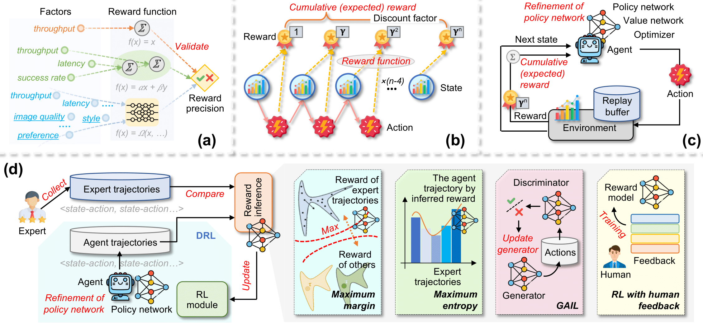
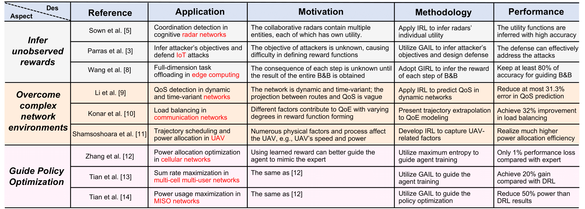

For IAI, we highlight the role of the mixture of experts, large language models, deep reinforcement learning, retrieval-augmented generation, and generative AI in promoting adaptability and interaction with users. Additionally, the components and advantages of IAI are also presented, emphasizing its efficiency and adaptability in different applications such as optimization and traffic management.

This table demonstrates the potential issues of IAI in Networking domain.

This figure demonstrates system design based on the framework of IAI.
In the IAI-enabled problem formulation framework, three key components are presented: brain, perception, and action. The brain units with LLM and RAG modules as the central processor, handling essential tasks such as memory retention, retrieval processing, and making decisions. Meanwhile, the perception module is responsible for acquiring and interpreting diverse data from the environment. Lastly, the action module implements responses and interacts with the environment, utilizing various tools for execution.
BibTeX
@article{zhang2024interactive,
title={Defining Problem from Solutions: Inverse Reinforcement Learning (IRL) and Its Applications for Next-Generation Networking},
author={Yinqiu Liu, Ruichen Zhang, Hongyang Du, Dusit Niyato, Jiawen Kang, Zehui Xiong, and Dong In Kim},
journal={arXiv preprint arXiv:2404.01583},
year={2024}}